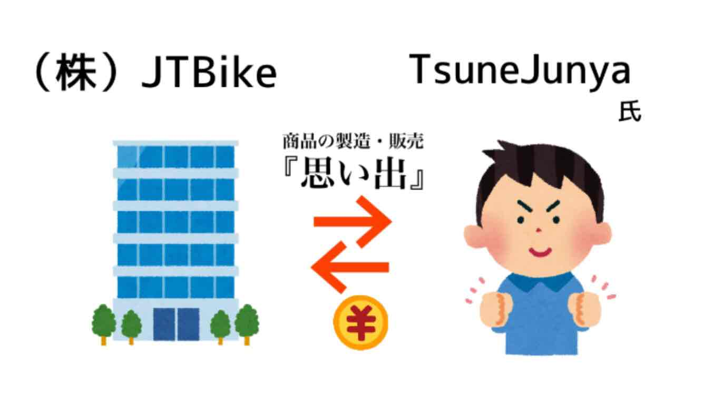

このページでは、日本一周をするのに要した経費についてまとめました。
また、実際の会計とは違っているところも多くあると思いますが、
会社っぽく費用を細かく分け、その内訳なども記録をつけました。
会社っぽくしたイメージは以下のようになります。
------------------------------------------------------

※（株）JTBikeはツッコミどころの多い会社ですが、スルーしてください。
※（株）JTBikeの売上は、TsuneJunya氏が『思い出』を購入することで計上されます。
※ 『思い出』の売価は¥10,000/日とし、ひと月の売上は約30万円となります。